currently based in wuhan
i.
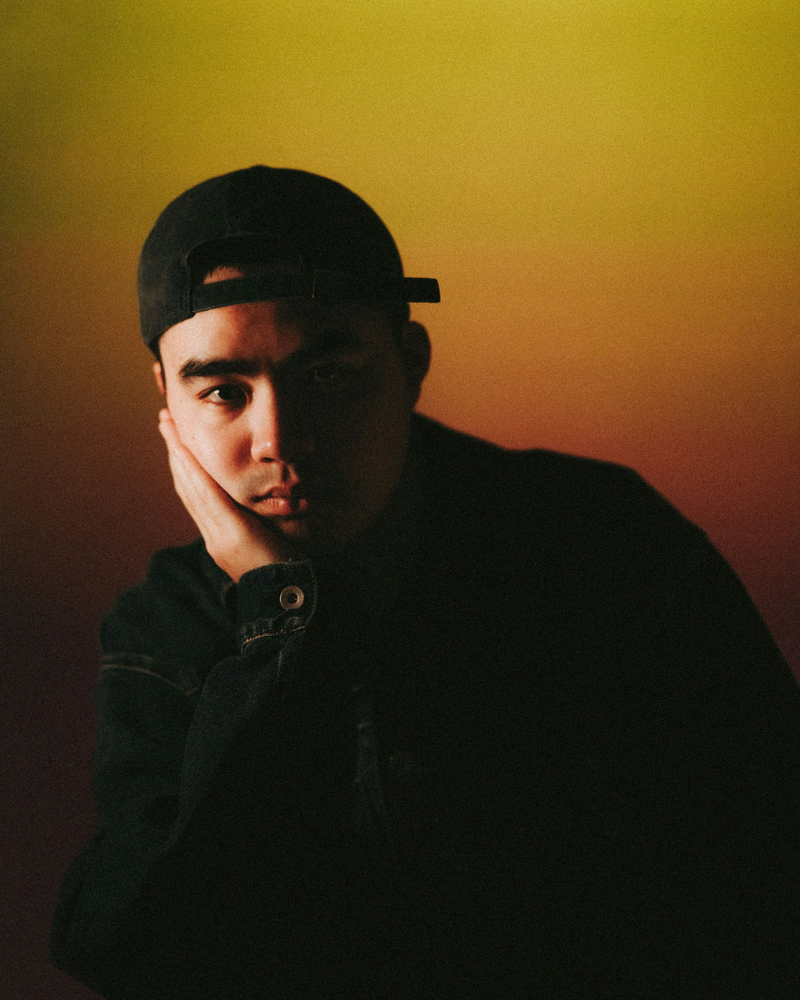
— a catalogue of research, buildings & photographs; reading the city through 2.78 million lines of text.
Geospatial analysis · scaling laws · spatial heterogeneity
Public sentiment measurement · depression perception
Machine learning · deep learning · LLM deployment
Environmental psychology · architectural design
Registrar's note — the Nature Cities manuscript offers the first large-scale, fine-grained quantification of the link between depressive states and perceived urban places in China. Fingers crossed.

Where it began — undergraduate design work, and the competition entry that quietly turned a designer into a researcher.


The darkroom — cinematic tones, natural light, and the interaction between people and place.
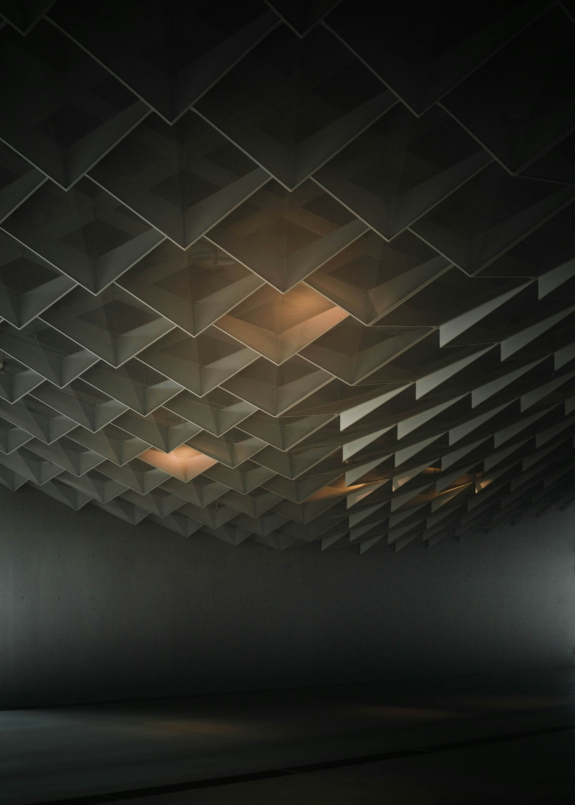
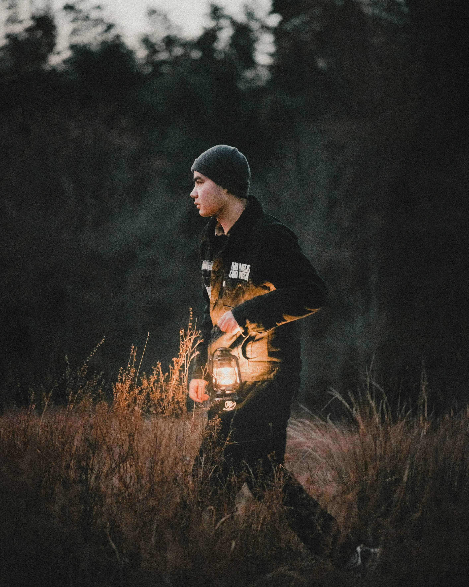
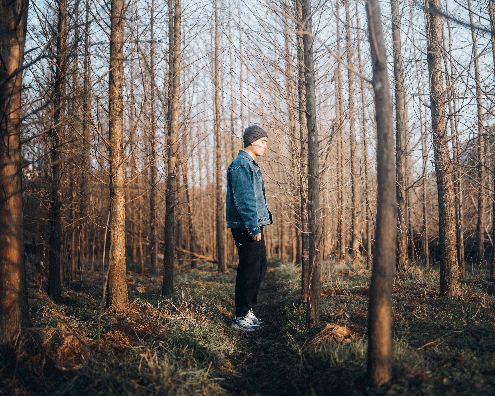
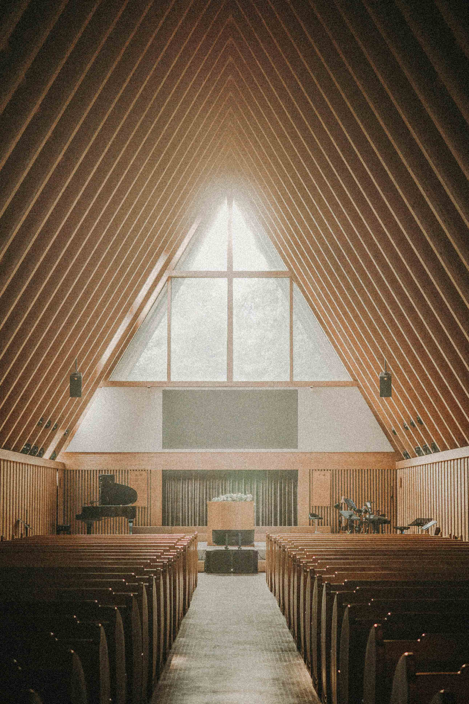
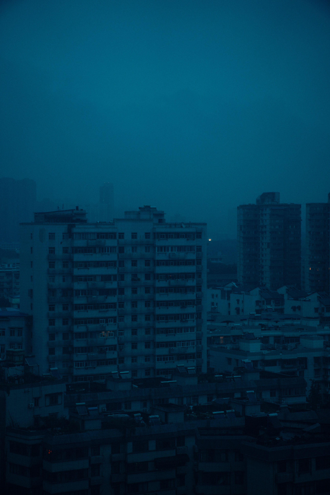
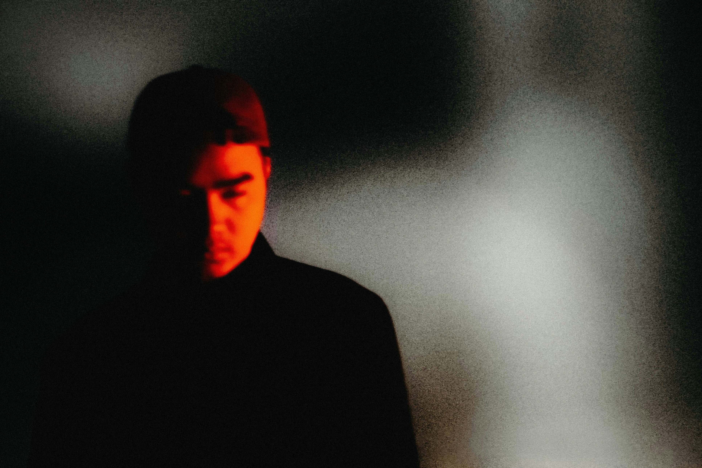
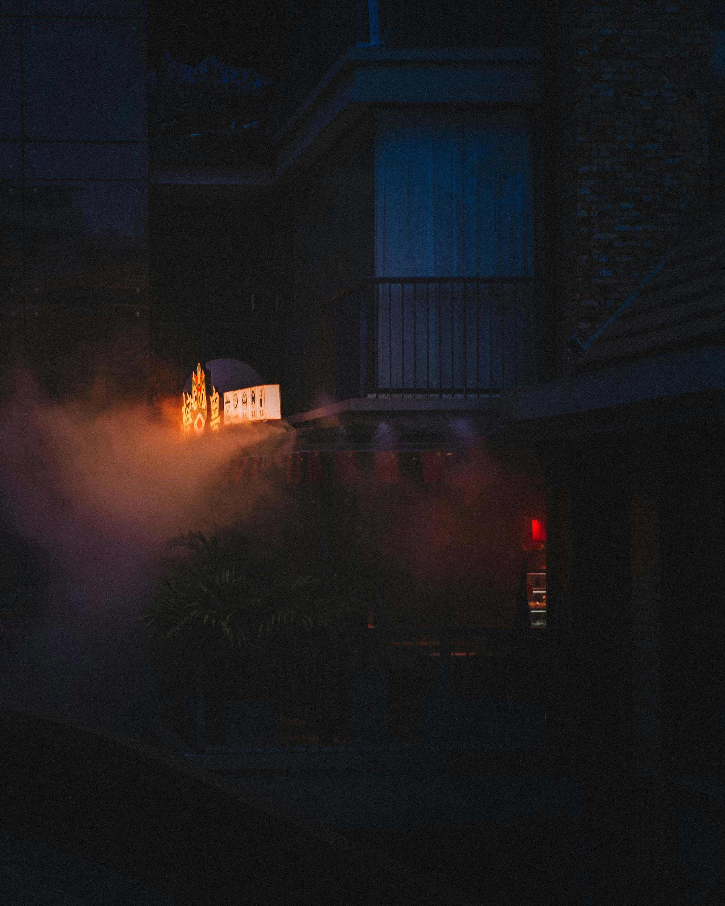
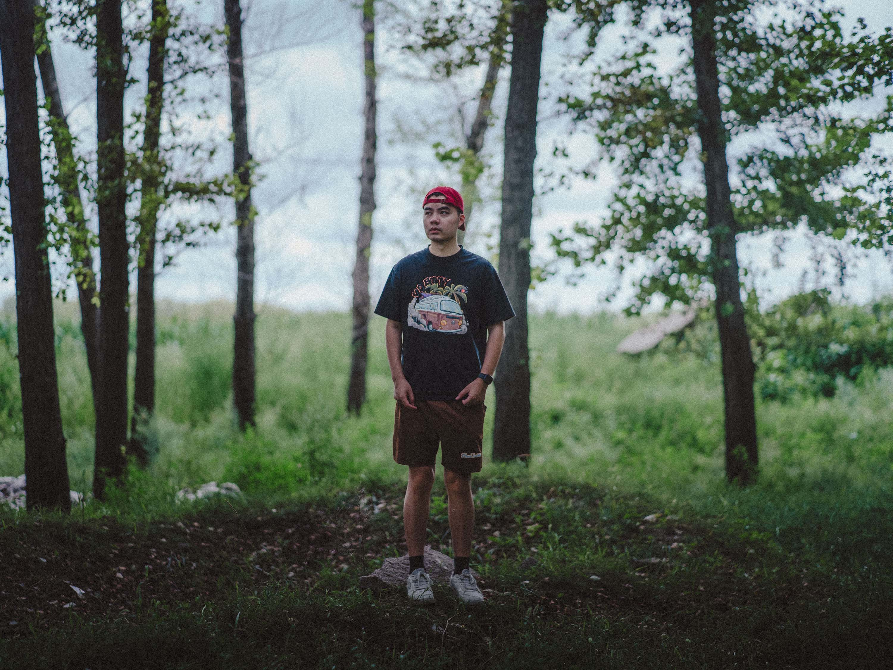
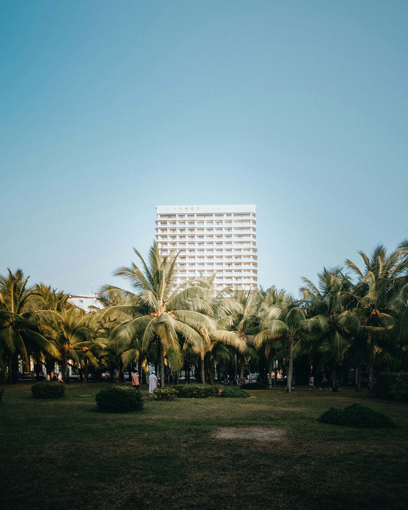
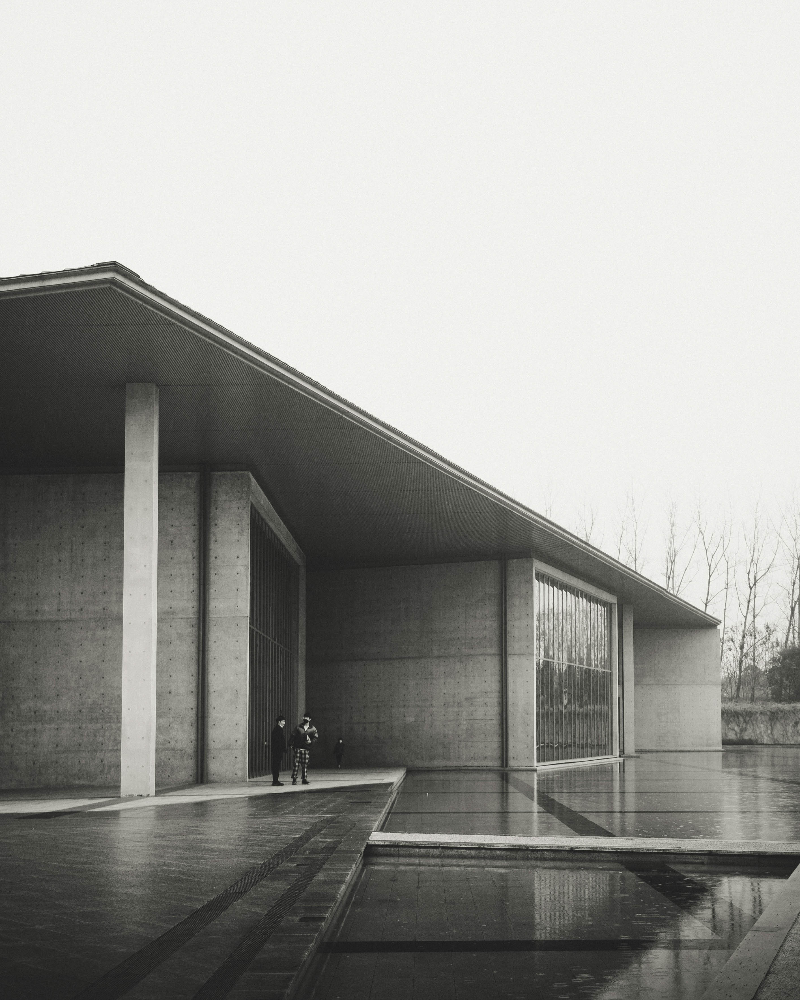
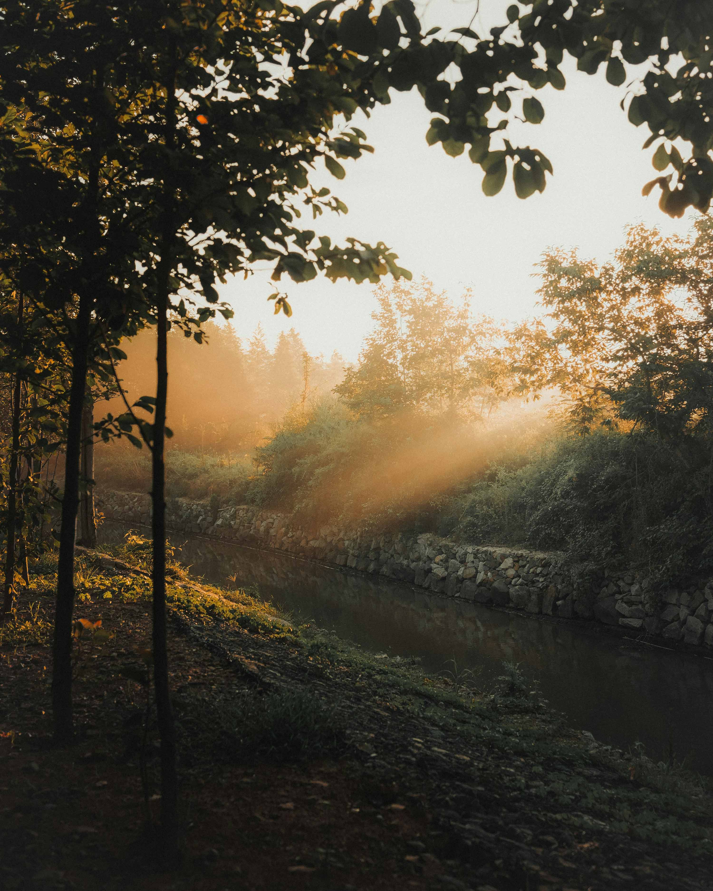